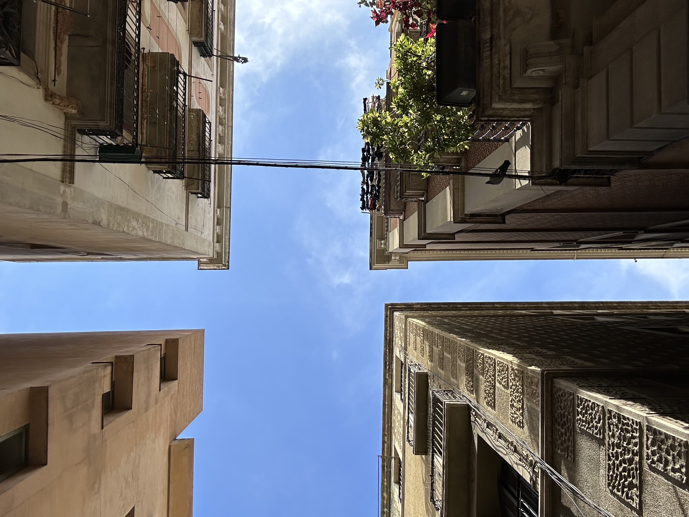
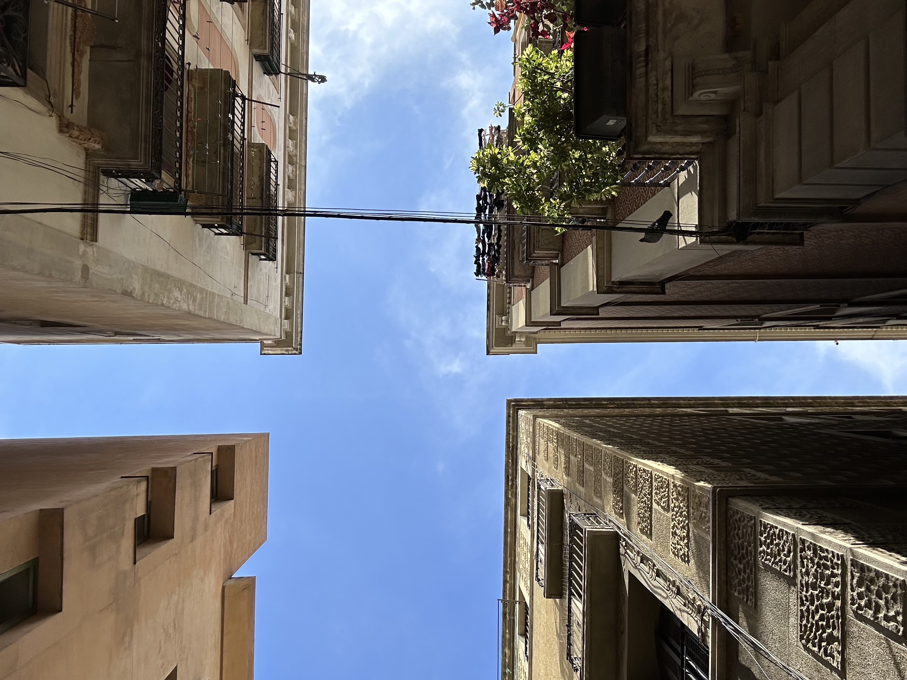

Barcelona is a city that captivates visitors with its vibrant blend of history, culture, and modernity. Nestled between the Mediterranean Sea and the rolling hills of Catalonia, this Spanish metropolis is known for its unique architecture, bustling street life, and delicious cuisine.

 

One of the standout features of Barcelona is its architectural diversity. The city is a canvas for the genius of Antoni Gaudi, whose iconic works like the Sagrada Família, Park Guell, and Casa Batllo attract millions of tourists each year. Gaudi's distinct style, characterized by organic shapes, vibrant colors, and intricate mosaics, sets the city apart. Walking through the Eixample district, you can witness how modernist architecture blends seamlessly with traditional Gothic and Romanesque influences.
Barcelona is also a cultural haven. From the Picasso Museum to the Fundacio Joan Miro, the city celebrates its rich artistic history. The Gothic Quarter invites you to get lost in its narrow, winding streets, where ancient Roman walls meet medieval churches and hidden squares. It's a place where history breathes in every corner, offering a glimpse into Barcelona's past.
No review of Barcelona is complete without mentioning its food. The city is a paradise for food lovers. Tapas bars, seafood restaurants, and local markets like La Boqueria offer a taste of Catalan cuisine. Whether you're savoring a fresh plate of paella by the sea or enjoying a simple yet delicious pan con tomate in a local cafe, Barcelona's culinary scene is a delightful mix of tradition and innovation.
Whether you're a history enthusiast, art lover, foodie, or beachgoer, Barcelona has something to offer. Its diverse neighborhoods, vibrant nightlife, and endless attractions make it a destination that continues to inspire visitors from all over the world. Feel free to adjust the tone, length, or content depending on your assignment's requirements!